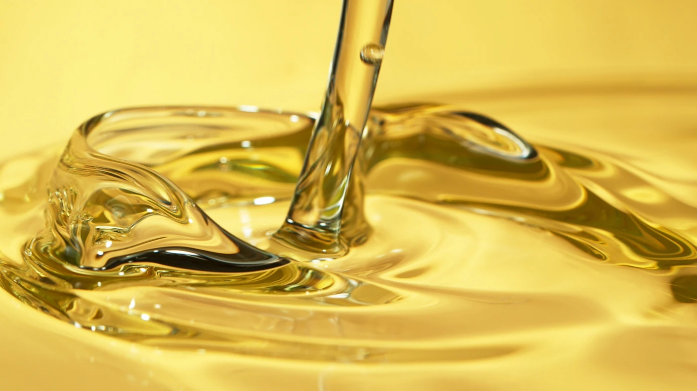

Kaltgepresste Öle
Kaltgepresstes Mariendistelöl
Kaltgepresstes Mariendistelöl als Großgebinde — reich an Silymarin & Vitamin E, Direktlieferant aus Bulgarien.
Bestelldetails
Verpackungsoptionen
Produktbeschreibung
Kaltgepresstes Mariendistelöl (Silybum marianum) ist ein blassgelb-goldenes Öl mit einem milden, leicht nussigen Charakter. Es unterscheidet sich von den meisten Pflanzenölen durch seinen relativ hohen Gehalt an natürlichen Silymarin-Verbindungen — einer Gruppe von Flavonolignanen, die in Spurenmengen in der Ölfraktion des Samens verbleiben. Dies, kombiniert mit einem hohen Linolsäuregehalt (50–60 %) und einem außergewöhnlich reichen natürlichen Vitamin-E-(Tocopherol-)Profil, macht Mariendistelöl zu einem der bioaktiv komplexeren Spezialöle.
Das Fettsäureprofil von Mariendistelöl ist dem konventionellen Sonnenblumenöl — linolsäuredominiert — weitgehend ähnlich, aber die Kombination seiner Silymarin-Spurfraktion und des erhöhten Tocopherolgehalts macht es interessant für funktionelle Lebensmittelformulierungen, die Entwicklung von Nahrungsergänzungsmitteln und hochwertige kosmetische Anwendungen, bei denen antioxidantienreiche Trägeröle gefragt sind.
Wir pressen dieses Öl kalt bei unter 40°C, um die hitzeempfindliche Tocopherol- und Silymarin-Fraktion zu erhalten. Ein vollständiges COA einschließlich Fettsäureprofil, Peroxidzahl und Tocopherolgehalt ist mit jeder Charge erhältlich.
Technische Spezifikationen
| Parameter | Spezifikation |
|---|---|
| Linolsäure (C18:2) | 50–60 % |
| Ölsäure (C18:1) | 22–28 % |
| Palmitinsäure | 7–9 % |
| Freie Fettsäuren | max. 1,0 % |
| Peroxidzahl | max. 10 meq/kg |
| Feuchtigkeit | max. 0,1 % |
| Farbe | Blassgelb-golden |
| Pressverfahren | Kaltpressung unter 40°C |
Dokumentation
Mit jeder Lieferung verfügbar
Analysezertifikat
Vollständige Parameteranalyse je Charge
StandardUrsprungszeugnis
Bulgarische Herkunft, EUR.1 für die EU
StandardPhytosanitäres Zertifikat
Ausgestellt von der bulgarischen BFSA
Auf AnfrageDrittlaborbericht
Akkreditierte Laborprüfung
Auf AnfrageInteresse an kaltgepresstem Mariendistelöl?
Kontaktieren Sie unser Vertriebsteam für Preisauskünfte, Muster und Lieferbedingungen.